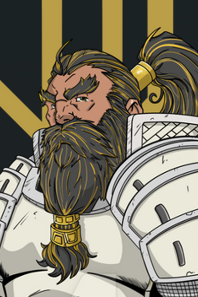

Boone¶
A stranger from distant lands, drawn by curiosity to a town on the edge of change.
Overview¶
| Player | Chris |
|---|---|
| Ancestry | Dwarf |
| Class | Fighter |
| Background | Veteran, outsider |

Description¶
Boone is a dwarf—a rarity in Tian Xia, where his kind are almost unheard of. He arrived in Willowshore as a stranger wandering in from distant lands, his presence drawing curious and sometimes suspicious glances from locals who have never seen his like.
His children are grown. His old life is behind him. He's out looking for adventure, and rumors of a new oni taking control of this quiet village drew his curiosity. He wandered in to see what was happening—and found himself in the middle of something far more complex than he expected.
Personality¶
Boone is direct and uncomplicated in a way that contrasts sharply with Willowshore's web of secrets and unspoken traditions. He is not a diplomat. He has no idea what's really happening with the oni and the ruling family's tensions. But he knows how to fight, and he's been itching to get back into the swing of things after years of peaceful retirement.
He likes hitting things. It's been a while, but some skills never fade.
Background¶
Boone is a veteran of a war fought long ago—the same conflict that Ginkgo and Donkey remember with their private memorial. But Boone was on the opposite side. None of them feel like winners. The war was like that—nobody came out ahead, and everyone carries the weight of what was lost.
Why He Came to Willowshore¶
Willowshore had been quiet for decades—a declining village that the wider world had largely forgotten. Then word spread that an oni mayor was coming, claiming power after generations of absence. Boone heard the rumors and grew curious. What kind of change was coming to this forgotten place?
He wandered in to find out. He's still figuring out the answer.
Relationships¶
Ginkgo & Donkey¶
Boone, Ginkgo, and Donkey are all veterans of the same war—though Boone fought on the opposing side. Despite this, they share an understanding that transcends old battle lines. All three see themselves as losers in a conflict that had no real winners. It was their Vietnam.
Session History¶
Session Zero (2026-01-16)¶
- Character created
- Established as a rare dwarf outsider in Tian Xia
- Revealed as a veteran who fought opposite Ginkgo and Donkey in an old war
- Arrived in Willowshore drawn by curiosity about the oni transition
Session One (2026-01-30)¶
- Recognized the warehouse explosion as deliberate (not just fireworks) using Warfare Lore
- Used his forge dwarf fire resistance to dive through flames and rescue Kimmy
- Crashed through a window to deliver the girl to her mother's arms
- Traded his longsword to Yong as partial payment for a ji-sarm polearm
- Recruited as a deputy by Magistrate Kurosawa
- Resisted Radiant Willow's attempts to braid his beard
Session Two (2026-02-05)¶
- Stayed with Hong at Silver Mist Lodge while the party met with Mido; bonded with the boy over stories of distant lands
- Used Sudden Charge in the graveyard combat to close 40 feet and strike in one move
- Killed the ghoul with a vertical cleave and the zombie with a horizontal slash—establishing a signature fighting style
- Used Raise Shield for +2 AC during combat
- Took 5 points of bludgeoning damage from the zombie
- Requested Yong prioritize the party's weapon orders; blades now expected by dusk
Session Three (2026-02-12)¶
- Stood guard while others investigated the Mourndusk Willow ritual pit; spotted the metallic glint of the ceremonial dagger
- Attempted Treat Wounds on himself before the clearing (failed—9)
- Charged the infected bear with his longsword (27 to hit, 7 damage); spores exploded from the wound (passed Fortitude save 22)
- Restrained and mauled by the bear — pinned, clawed, and bitten; unable to escape across three rounds of attempts
- Knocked to 0 HP by a critical claw attack (12 slashing damage); entered dying condition
- Healed back to consciousness by Ginkgo's Heal spell (12 HP)
- Rose and delivered the killing blow to the bear (10 damage), slicing deep into its side
- Visited Hong with Da Baishan in the evening; confirmed no further sabotage was planned by the children
- Received his ji-sarm from Yong, bearing a striking rune as a gift of gratitude
- Reassured the terrified Hong with a clap on the shoulder (Hong flinched)
Session Four (2026-02-26)¶
- Sensed no deception from Kimmy when she reported Hong in the well (Perception 20)
- Recognized the Kaizo clan dagger found with the dwarven skeleton—a veteran from the opposing side of the old war: "We weren't friends, but I guess we're not enemies anymore."
- Compared the Kaizo dagger to his own Vestri clan dagger; identified the "endurance" rune as the family motto
- Helped bury Kaizo's bones at the graveyard
- Scouted the ceremony route with Da Baishan and Littlefinger (Perception 20—nothing suspicious)
- Stayed at the Festival of Returning Spirits to observe the ceremony and provide backup
- Chased down Mayor Masru with a basket of fish to stall him from returning to the estate—tripped and scattered food everywhere (Diplomacy 3)
- Despite the fumble, Masru liked him; the mayor introduced himself casually and went back to feasting
- Radiant Willow has matchmaking plans for him with Cloud Ygritte, a patient yak herder with chin fuzz
- Reached Level 2
Session Five (2026-03-12)¶
- Reunited with the party outside the estate walls; headed back to the festival
- Wanted to find Willow and facilitate the matchmaking; wanted to ask Mido about the moths
- Gave Guidance to Littlefinger during his Diplomacy check with Meilin
- During martial law, used a bold deception on oni guards: "He asked us to come see him. Do you want to be the one to tell him that you denied his explicit order?" (Deception—good roll); guards escorted the party to Kurosawa instead of arresting them
- Backed up Da Baishan before Kurosawa: "As we understand it, he asked us to find any unrest. This is clearly unrest."
- Visited Mido; asked about escape routes from town; learned the magistrate's arcane abilities make simple evasion risky
- Cloud Ygritte, his matchmaking candidate, had retired early from the festival before they could meet
- Level 2 upgrades: Medic Dedication (archetype feat—expertise in Medicine; enhanced Battle Medicine and Treat Wounds; once per day break Battle Medicine immunity); Assurance in Medicine (skill feat—guaranteed success at basic DCs)
- Homebrew hero point: Second Wind—gain temporary HP; immune to fatigued, slowed, and sickened for 10 minutes
Session Six (2026-03-19)¶
- Had a unique dream different from the rest of the party—a battlefield vision of the Battle of Five Crows, a massacre from the old war; saw Cheng Yesho performing a chanting ritual that summoned a demonic entity; a voice repeated: "The artist, the ruler, the sage, the lover, the judge. Five must fall before the world is born anew."
- Felt a chill upon seeing Cheng's permanent smile again—a visceral flashback to the dream where Cheng's face distorted during the ritual
- Shared the dream with the party; the prophecy became a central investigation thread
- Demoralized the infected werewolf in combat (Intimidation vs. Will—creature rolled a 1, becoming frightened); helped trip the creature prone
- Dealt 21 damage with his polearm after the trip, the heaviest single hit of the fight
- Radiant Willow attempted to set him up with someone new; politely declined
- Religion check (18) revealed the old gods had shifting names (one called the "Nameless God"), their domains were chaos, destruction, lust, and blood
Session Seven (2026-04-02)¶
- Healed himself with Assurance (Medicine) for 7 HP during the rest period
- Used the Scout exploration activity while approaching the ruins—granting +1 initiative to the entire party
- Critically hit the first stone guardian with his polearm for 30 damage (using the new crit rule: max 24 + 14 rolled), then struck again for 16 damage—shattering it to dust in two swings
- Killed the second stone guardian alongside Da Baishan in the "Predator handshake"—clasping hands across the crumbling stone as both weapons pierced it
- Used Battle Medicine on Da Baishan for 7 HP after the guardian fight
- Recall Knowledge (Nature 22) on the corrupted wolves: learned they are pack hunters, much less effective alone; no special resistances
- Recall Knowledge (Religion 14) on the spectral guardian: learned it's resistant to non-magical weapons, immune to poison/bleed, and weak to vitality damage
- First attack on the spirit missed (12), but second attack struck for 20 damage—arcing through its form with his magical polearm
- Landed the killing blow on the invisible spirit—struck for 20 damage, shattering its tether to the world; the spirit exploded in a cold shockwave
- Took 12 cold damage from the spirit's phase-through attack and 7 cold damage from the death explosion (successful Reflex save)
- Carries the alabaster dial piece removed by Donkey from the "Mother" symbol
- Discovered that his polearm has the reach trait—allowing him to strike from 10 feet away without adjacent positioning
Session Eight (2026-04-22)¶
- Survived the ruin collapse mostly intact (3 bludgeoning damage); received his personal mark from Vujravati in the frozen moment—the echo of the voice from his Battle of Five Crows dream
- Stabilized Da Baishan using Assurance (Medicine) after Littlefinger's kit was damaged in the collapse and couldn't stabilize him
- Identified the name "Shen Takashi" through warfare lore (25)—the Silent Duelist, a legendary oni ronin who broke from the oni leadership; hadn't been seen in ~20 years
- Landed a 15-damage polearm hit on a demon in the Willowshore street fight, gutting it across the belly
- Performed the "Predator handshake" again with Da Baishan over a finishing blow (locked in as a permanent move)
- During the trial: argued the mayor should hear all evidence, not Kurosawa's accusations; called to the crowd to address the accusation pattern
- Delivered the session-defining appeal: asked the whole town "Who had the dream?" (Diplomacy 13 with Ginkgo's Guidance); only Radiant Willow raised her hand
- Still carried the alabaster dial piece—confiscated with his other gear at the end of the session
Session Nine (2026-05-07)¶
- Caught in Kurosawa's opening earthen-grasp as the chase began — earth and rock closed around him "like a python". Failed reflex save 17 (vs. DC unknown but high)
- Athletics 30 to escape the grasp — ripped his arms through, pulled his legs out, broke free; took two of his three actions and ran
- Critically struck twice by Kurosawa at the wall — 24-damage crit + 18 follow-up — dropped to 0 HP and died on his feet
- Saved from death twice in two minutes:
- First by Ginkgo's Vujravati gift stabilizing him (1 HP, no longer dying) — Kurosawa stood over him tasting his blood as it happened
- Then by Boone's own battle medicine crawl-over to revive Littlefinger, plus a second battle medicine on himself
- Crawled with the Step action (no reactive strikes) to reach Littlefinger across the open ground
- Surrendered to honor Willow. "Willow, you showed bravery during our trial. Out of respect for you, I will talk peacefully." Boone was the one who turned the room
- Smuggled his clan dagger past the weapon-search (Thievery 19)
- In the warehouse, ran the treat-wounds clinic for the entire party — 11 to Littlefinger, 11 to Da Baishan, 7+8 to himself, 10 to Ginkgo, with healer's tools borrowed from Donkey
- Asked Mido for heavier armor — finally full plate sized for him, +2 AC, "where it's supposed to be." His new baseline armor for the chapters ahead
- Took one of the five healing potions
- Stripped the plate to wade across the river south of Willowshore at moonrise; redonned on the far bank. Reached Level 3
Session Ten (2026-05-14)¶
- Helped engineer the ham trebuchet for the Glutton Ogre at the stone bridge — bent the bamboo, latched the trigger, hauled the tree down hand over hand; rolled Crafting 27 to launch the ham at treetop height across the clearing. "The ham trebuchet is definitely up there on my favorite things I've done in D&D"
- Spotted the ogre re-positioning towards them on a Perception 22 while Donkey was distracted with the puzzle — got the party staged behind cover before the rush
- Sat with Cliché at the hermit's fire on the switchback; was named "truth hound" before he gave his own name. Took a warm hand-stone for the cold mountain air. Shrugged off Donkey's offer of his Frost Walker tattoo — the cold wasn't severe enough to spend 30 gp on the ink yet
- At the cliff with no door, watched Da Baishan draw the eye open by knocking, took the eye himself only at the inner sanctum's threshold
- Inside the Hall of Divided Testimony, took early Occultism 26 on a free Expeditious Inspection — first to identify that the lantern was the key and that the scrolls were lying somewhere in addition to lying on the floor; second 16 Occultism to keep teasing on the puzzle. Held the line on lock-it-in / don't-lock-it-in all the way through "I think we should lock them in. What do y'all think?"
- Stepped through the inner door first with his eye-tattooed hand raised; the kneeling Stone Witness rose, mirrored his hand, and walked to the alcove. "I was wary of picking it up with the giant statue looming over me, but yeah, I'll pick it up."
- Took the Book of Divided Testimony off the lectern. The book is blank to everyone except him. First page: "Truth does not rescue. Truth is responsibility." Two of eight book-truths rolled on first reading: Mido's Half-Truth and Kurosawa's Error. Six remain
- Took the Palatine Detective dedication offered by the book — Boone is now formally a junior member of the Order of the Palatine Eye. Dropped the eye-tattoo from the cliff knock and let Da Baishan keep his
- The cliff sealed seamlessly behind the party as they left; only Boone's hand and his copy of the book can open it again
(Continuity: the eye-mark, the Palatine Detective archetype, and the role of Order-reader sit with Da Baishan as of Session Eleven — see the Order's continuity note.)
Session Eleven (2026-06-04)¶
- Carried the spider fight. Killed the first hunter spider through the chest with his polearm, then freed the immobilized Ginkgo from the web-pit with an assisted Athletics yank — "reaching in and forcefully picking up Ginkgo and giving him a good shake"
- Got snared upside-down in a tree by a hidden web-snare while advancing on movement he'd spotted; chose to keep swinging at the spiders while inverted ("I can attack upside down, sure. Why not?") and killed one before cutting at the snare line
- Ran the post-fight clinic again with Battle Medicine — and reminded the table his Robust Health feat gives bonus healing and only a one-hour immunity instead of a day
- Ripped the master graft root out of the basin — the moment Ginkgo and Da Baishan couldn't manage, Boone jumped into the dry basin and tore it free on Athletics 25, black ichor splattering as it writhed and died in his hand
- That single act roused the Warden of the Grove; ended the session musing about whether next time opens with a fight or a conversation — "maybe it knows we're on the same side"